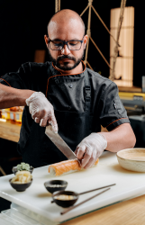

La vida de Luisa
Había una vez una joven mujer llamada Luisa, nacida en la hermosa ciudad de Medellín, Antioquia. Luisa tenía 21 años y era una persona amorosa, empática y colaboradora. Su personalidad encantadora y su gran corazón le habían ganado el amor y el respeto de todos los que la conocían. Desde muy temprana edad, Luisa descubrió su pasión por la cocina. Siempre se encontraba experimentando en la cocina de su hogar, creando platos deliciosos y sorprendentes. Su amor por la gastronomía fue creciendo cada vez más, y soñaba con convertirse en una reconocida chef. Luisa tenía metas claras en mente. Quería convertirse en una chef talentosa, abrir su propio restaurante y alcanzar el éxito en el mundo culinario. No importaba cuánto trabajo y esfuerzo tendría que invertir, estaba dispuesta a perseverar y trabajar arduamente para lograr sus sueños.
A medida que avanzaban los años, Luisa se dedicó a su formación en la cocina. Asistió a las características de las escuelas culinarias, donde aprendió técnicas y habilidades que complementaron su talento innato. Su amor por la cocina y su pasión por la excelencia la distinguían entre sus compañeros. Además de su determinación y dedicación en la cocina, Luisa también mostró su amor y apoyo a quienes la rodeaban. Siempre estaba dispuesta a ayudar a los demás, ofreciendo su tiempo y esfuerzo para colaborar en proyectos comunitarios y causas benéficas. Su empatía y voluntad de servir a los demás la convertirían en un verdadero ejemplo a seguir. Con el tiempo, Luisa comenzó a trabajar en restaurantes reconocidos, donde perfeccionó sus habilidades y adquirió experiencia en la gestión de una cocina profesional. Cada día se acercaba un poco más a su sueño de abrir su propio restaurante.
Finalmente, llegó el día en que Luisa inauguró su propio restaurante. Con gran entusiasmo y determinación, creó un lugar acogedor y encantador donde la comida excepcional se mezcló con la calidez y el amor que ella misma irradió. El restaurante de Luisa se convirtió rápidamente en un éxito, atrayendo a comensales de todas partes y ganando reconocimiento por su talento culinario. A medida que pasó el tiempo, Luisa siguió superando obstáculos y alcanzando nuevas metas. Su pasión, amor y dedicación la llevaron a convertirse en una chef exitosa y respetada en el mundo de la gastronomía. Pero más allá de su éxito profesional, Luisa siempre mantuvo su espíritu amoroso, empático y colaborador, brindando apoyo a los demás y compartiendo su conocimiento con quienes lo necesitaban. La historia de Luisa es un testimonio inspirador de cómo el amor, la pasión y la determinación pueden llevarnos a alcanzar nuestros sueños. Su historia nos recuerda que, con un trabajo duro y una actitud positiva, podemos lograr cualquier meta que nos propongamos.